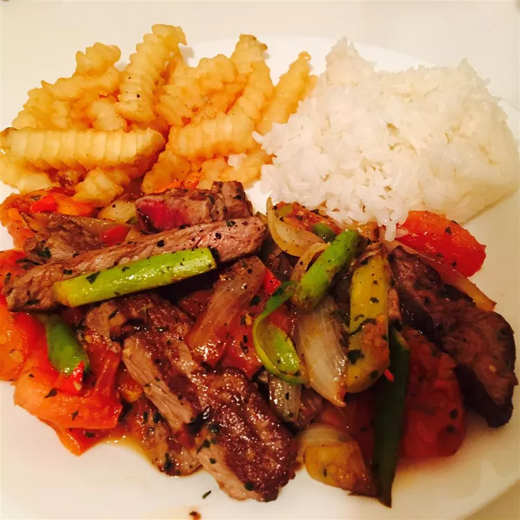

Peruvian Lomo Saltado

Source: www.allrecipes.com
A delicious peruvian dish for steak and french fries lovers
This lomo saltado recipe is a traditional and very easy dish to make. I might add that it's also very popular with finicky kids and adults.
A delicious blend of Asian and Latin flavors. Tender strips of steak are stir-fried with onions, tomatoes, and French fries, creating a hearty and flavorful meal that is perfect for any occasion.
Ingredients
- 1 (16 ounce) package frozen French fries
- 2 tablespoons vegetable oil
- 1 pound beef tri tip, sliced 1/8 to 1/4 inch thick
- salt and pepper to taste
- 1 large onion, sliced into strips
- 3 large tomatoes, peeled, seeded, and sliced into strips
- 1 yellow chili pepper (preferably Peruvian aji amarillo)
- ¼ cup distilled white vinegar
- 1 dash soy sauce to taste
- 2 tablespoons chopped fresh parsley
Steps
- Preheat the oven to 425 degrees F (220 degrees C).
- Arrange frozen French fries in a single layer on an ungreased cookie sheet.
- Bake in the preheated oven until light golden, 22 to 24 minutes.
- Meanwhile, heat 2 tablespoons oil in a frying pan over medium-high heat. Season sliced beef with salt and pepper. Cook and stir beef in hot oil until just cooked and the juices release. Use a slotted spoon to transfer beef to a plate.
- Cook and stir onions in beef drippings in the pan until translucent, 3 to 4 minutes. Stir in tomato and aji amarillo; cook until tomato softens. Pour in vinegar and soy sauce.
- Add French fries and beef to the pan. Cover and cook until beef is cooked through, about 3 minutes. Season with salt and pepper; sprinkle with chopped parsley to serve.